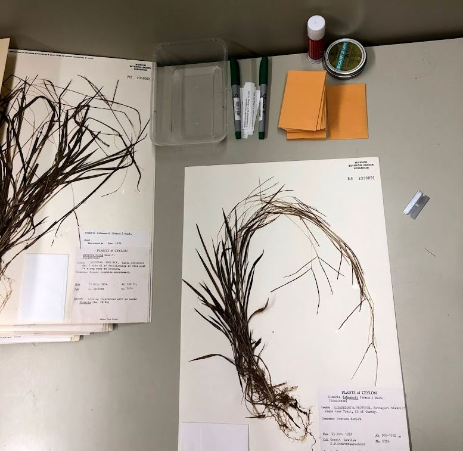

Welcome to the Andropogoneae Extended Specimen Project!
This page is currently under construction; please contact Jordan Teisher jteisher@mobot.org with questions.
Authors: J.K. Teisher, P. Smock, C.A. McAllister, T.M. AuBuchon-Elder, E.A. Kellogg
This project is designed to build functionality in Tropicos for creating extended specimen records. The goal with such records is to connect as much relevant data as possible directly to the specimen from which it was generated, without including other data from other conspecific specimens. In this project, the specimens include the standard herbarium metadata of collector, collector's number, collection date, locality, and herbarium barcode. The extended specimen then links to the specimen record additional data for that particular specimen. It specifically does not link general data from other specimens of the same species.
The Plant Group
Our focal group is the grass tribe Andropogoneae, a central component of tropical grasslands throughout the world. Andropogoneae are C4 grasses that together cover ca. 15% of the earth's land surface. The tribe is monophyletic and includes ca. 1200 named species, although only about 2/3 of these are represented by digitized specimens. The group is economically pre-eminent among plant species because it includes maize, sorghum, and sugar cane, as well as a number of potential biofuels such as Miscanthus, species such as vetiveria cultivated for their essential oils that are the basis for many perfumes, and ones such as lemon grass that are used for flavoring foods. The species also provide valuable forage for livestock and wild animals.

This project grew out of a large genome sequencing project in which we attempted to generate sequences (short-read Illumina or long-read PacBio) for one or more representatives of all available species. This ended up being 572 distinct accessions of 496 species.
The Data
For each specimen in the project, we have label data (locality, collector, date of collection, etc.), taxonomic identity, and one or more of the following:
- Images (herbarium sheet, three intact spikelets plus the same three spikelets dissected)
- Spikelet measurements (from the images)
- Genbank number(s)
- Genome size (pg or bp DNA)
These represent substantially different data types that have each required different data structures. For more detailed information on the data types and measurement protocols, visit the About the Data page.

Software Development
Including each of these datatypes required development of new modules in tropicos and slight modifications of the structure of the database. A full description of the problems addressed and their solutions will be presented in a future publication.
Here, as throughout Tropicos, we distinguish between the specimen, which is a single plant or a few small plants on a single sheet of paper, and a collection, which includes duplicate specimens collected at the same time and place. These duplicates are conventionally sent to other herbaria. Thus the specimen at MO (herbarium abbreviations following Thiers et al.) is distinct from the specimen at K or NY, but all may be part of the same collection.
Funding: The project was supported by the NSF PGRP-1822330 to Ed Buckler (Cornell and USDA-ARS) and NSF-DEB 1929514 to Elizabeth Kellogg (Danforth Plant Science Center).